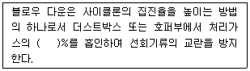

산업위생관리산업기사 (2003-05-25 기출문제)
1과목: 산업위생학 개론
1. 작업자의 체격과 숙련도, 작업환경에 따라 피로를 가장 적게하고 생산량을 최고로 올릴 수 있는 경제적인 작업 속도는?
- 단위속도
- 지적속도
- 생산속도
- 균형속도
(정답률: 알수없음)

2. 다음 중 미국산업위생전문가협의회(ACGIH)에서 제시한 허용농도 적용상의 주의사항에 해당되지 않는 것은?
- TLV는 대기오염평가에 적용할 수 없다.
- TLV는 독성의 강도를 비교할 수 있는 지표가 아니다.
- TLV는 산업장의 유해조건을 개선하기 위한 지침으로 사용하지 않는다.
- TLV는 기존의 질병이나 육체적 조건을 판단하기 위한 척도로 사용할 수 없다.
(정답률: 73%)
3. 공기중 납(Pb)의 농도가 0.03㎎/m3이다. 작업자의 노출 시간은 8시간이며 폐환기율은 1.2m3/hr 라고 하면 체내 흡수량은? (단, 체내잔류율은 1.0로 가정한다 )
- 약 0.14㎎
- 약 0.19㎎
- 약 0.24㎎
- 약 0.29㎎
(정답률: 42%)
4. 노동에 필요한 에너지원은 근육에 저장된 화학적에너지와 대사과정을 거쳐 생성되는 에너지로 구분된다. 근육운동의 에너지원이 대사에 주로 동원되는 순서(시간대별)를 가장 바르게 나타낸 것은? (단, 혐기성 대사 )
- Glycogen → CP → ATP
- Glycogen → ATP → CP
- ATP → CP → Glycogen
- CP → ATP → Glycogen
(정답률: 알수없음)
5. 다음 중 진동공구에 의한 수지의 레이노드(Raynaud)씨 현상을 1911년에 상세히 보고한 사람은?
- Loriga
- R. Cobolt
- I. Cannon
- A. Hamilton
(정답률: 100%)
6. 역사상 최초로 기록된 직업병은?
- 납중독
- 진폐증
- 수은중독
- 소음성난청
(정답률: 92%)
7. 기초대사량이 75 kcal/hr이고, 작업대사량이 225 kcal/hr인 작업을 수행할 때, 작업의 실동률은? (단, 실동률 = 85 - (5 × RMR) )
- 50%
- 60%
- 70%
- 80%
(정답률: 알수없음)
8. 1775년 영국에서 굴뚝청소부로 사역하였던 10세미만의 어린이에게서 음낭암을 발견한 사람은?
- T.M Legge
- Gulen
- Coriga
- Percival pott
(정답률: 84%)
9. 육체적 작업을 하는 근로자가 필요로 하는 영양소 중에서 열량공급의 측면으로 가장 유리한 것은?
- 비타민
- 지방
- 단백질
- 탄수화물
(정답률: 54%)
10. Viteles가 분류한 산업피로의 3가지 본질과 가장 거리가 먼 것은?
- 생체의 생리적 변화
- 피로 감각
- 작업량의 감소
- 재해 유발
(정답률: 46%)
11. 척추의 디스크중 물체를 들어올릴 때 및 뛸 때 발생하는 압력은 어느 위치에 대부분 흡수되는가?
- L3/S1 discs
- L4/S1 discs
- L5/S1 discs
- L6/S1 discs
(정답률: 알수없음)
12. 작업자의 교대제편성상 고려사항과 그에 따른 관리방법과 가장 거리가 먼 것은?
- 근무시간 : 8시간 교대로 하고,야근은 짧게 한다.
- 야근근무의 연속일수 : 5 ~ 6일로 조정한다.
- 야근교대시간 : 상오 0시 이전이 바람직하다.
- 야근시 가면(假眠) : 1시간 30분 이상으로 한다.
(정답률: 73%)
13. 식품과 영양소에 관한 설명으로 알맞지 않은 것은?
- 영양소는 합성과정인 이화작용과 분해과정인 동화작용으로 진행되는 신진대사를 통하여 얻는다.
- 5대 영양소란 탄수화물, 단백질, 지방질, 무기질 및 비타민을 말한다.
- 체성분을 구성하는데 관여하는 영양소는 주로 단백질, 무기질, 물이다.
- 지방은 1g이 체내에서 산화 연소될 때 9kcal의 열량을 내어 당질보다 많은 열량을 낸다.
(정답률: 39%)
14. 다음 재해율 계산방법 중 강도율을 나타낸 것은?
- (연간 재해자수 / 연평균 근로자수) × 1,000
- (연간 재해자수 / 연평균 근로자수) × 1,000,000
- (재해발생건수 / 연근로시간수) × 1,000,000
- (손실작업일수 / 연근로시간수) × 1,000
(정답률: 58%)
15. 다음 중 미국산업위생학회(AIHA)의 산업위생에 대한 정의로 가장 적합한 것은?
- 근로자나 일반대중의 육체적, 정신적, 사회적 건강을 고도로 유지 증진시키는 과학과 기술
- 작업조건으로 인하여 근로자에게 발생할 수 있는 질병을 근본적으로 예방하고 치료하는 학문과 기술
- 근로자나 일반대중에게 질병, 건강장애와 안녕 방해 심각한 불쾌감 및 능률 저하등을 초래하는 작업환경요인과 스트레스를 예측, 측정, 평가하고 관리하는 과학과 기술
- 근로자나 일반대중에게 육체적, 생리적, 심리적으로 최적의 환경에 제공하여 최고의 작업능률을 높이기 위한 과학과 기술
(정답률: 90%)
16. 중(重) 작업대사율(RMR)은 얼마인가?
- 1 ~ 2
- 2 ~ 4
- 4 ~ 7
- 7 이상
(정답률: 60%)
17. 국소피로를 평가하는 데는 근전도(EMG)를 많이 이용한다. 정상근육과 비교하여 피로한 근육에서 나타나는 EMG의 특징과 거리가 먼 것은?
- 총전압의 증가
- 평균주파수의 증가
- 저주파수(0∼40㎐) 힘의 증가
- 고주파수(40∼200㎐) 힘의 감소
(정답률: 70%)
18. 방사선 피폭으로 인한 체내 조직의 위험정도를 하나의 양으로 나타내는 유효선량을 구하기 위해서는 조직 가중치를 곱하게 된다. 가중치가 가장 높은 조직은?
- 골수
- 생식선
- 피부
- 갑상선
(정답률: 알수없음)
19. 허용농도는 1일 8시간 작업기준으로 설정되었다. 1일 11시간 작업할 때 n-Hexane(TLV 50ppm)의 허용농도를 Brief 와 Scala의 보정방법으로 보정하면 얼마가 되는가?
- 약 30ppm
- 약 38ppm
- 약 42ppm
- 약 46ppm
(정답률: 67%)
20. 산업피로의 증상으로 알맞지 않은 것은?
- 체온은 높아지나 피로정도가 심해지면 낮아진다
- 혈당치와 젖산이 증가한다.
- 소변양이 줄고 진한 색깔이 된다.
- 호흡이 빨라진다.
(정답률: 30%)
2과목: 작업환경측정 및 평가
21. 가스크로마토그래프의 검출기중 할로겐탄화수소화합물의 분석에 가장 적합한 것은?
- 불꽃광전자검출기(FPD)
- 불꽃이온화검출기(FID)
- 광이온화검출기(PID)
- 전자포획검출기(ECD)
(정답률: 23%)
22. 고온작업장의 고온허용 기준인 습구흑구 온도지수(WBGT)의 옥내 허용기준 산출식은? (단, NWB : 자연습구온도, GT : 흑구온도 이다.)
- WBGT = 0.3NWB + 0.2GT
- WBGT = 0.3NWB + 0.7GT
- WBGT = 0.7NWB + 0.1GT
- WBGT = 0.7NWB + 0.3GT
(정답률: 73%)
23. 누적소음 폭로량 측정을 사용하여 작업장의 소음을 측정하였다. 다음 중 시간 가중 평균소음(㏈)을 구하는 식은? (단, D : 누적소음폭로량(%)이다)
- 16.61log(D/100))+90
- 16.61log(100/D))+90
- 20log(D/100))+90
- 20log(100/D))+90
(정답률: 39%)
24. 사람들이 일반적으로 들을 수 있는 주파수 범위로 가장 적절한 것은?
- 20 ~ 20,000 Hz
- 2 ~ 2,000 Hz
- 200 ~ 200,000Hz
- 0.2 ~ 20,000Hz
(정답률: 37%)
25. 고분자화합물질의 분석에 적합하며 이동상으로 액체를 사용하는 분석기기는?
- HPLC
- GC
- XRD
- ICP
(정답률: 43%)
26. 작업환경 측정의 표시단위에 대한 연결이 잘못된 것은?
- 분진(석면분진포함) : ㎎/m3
- 소음 : ㏈(A)
- 온열(복사열포함) : ℃
- 가스, 증기, 미스트등 유해물질 : ㎎/m3 또는 ppm
(정답률: 100%)
27. 1000 μg/mL 농도의 보관용 Cr 표준용액 1 L를 제조하고자 한다. 증류수 1 L에 첨가해야 할 K2CrO4의 양은? (단, K2CrO4의 분자량 : 194.2, Cr의 분자량:52)
- 0.03735 g
- 0.3735 g
- 3.735 g
- 37.35 g
(정답률: 17%)
28. 다음 내용은 흡착제로 공기 중 증기를 채취할 때 파과현상에 대한 설명이다. 이 중 옳지 않 은 것은?
- 시료채취유량이 높으면 파과가 일어나기 쉽다.
- 고온일수록 흡착성질이 감소하며 파과가 일어나기 쉽다.
- 극성흡착제를 사용할 경우 습도가 높을수록 파과가 일어나기 쉽다.
- 공기중 오염물질의 농도가 높을수록 파과용량은 감소하나 파과공기량은 증가한다.
(정답률: 알수없음)
29. TCE(분자량=131.39)에 노출되는 근로자의 노출농도를 측정하고자 한다. 추정되는 농도는 25 ppm이고 분석방법의 정량한계가 시료당 0.5 mg일 때, 정량한계 이상의 시료량을 얻기 위해서는 공기는 최소한 얼마나 채취해야 하는가? (단, 25℃, 1기압 기준)
- 2.7 L
- 3.7 L
- 4.7 L
- 5.7 L
(정답률: 34%)
30. 활성탄에 흡착된 증기(유기용제-방향족탄화수소)를 탈착 시키는데 일반적으로 사용되는 용매는?
- chloroform
- methyl chloroform
- H2O
- CS2
(정답률: 40%)
31. 직경이 0.5㎛ 이하로 작은 분진은 호흡기 내에서 어떠한 작용으로 주로 침적하게 되는가?
- 충돌
- 침강
- 침전
- 확산
(정답률: 40%)
32. 공기 중의 석면 시료분석 방법 중 가장 정확한 방법으로 석면의 감별분석이 가능하며 위상차 현미경으로 볼 수 없는 매우 가는 섬유도 관찰이 가능하나 값이 비싸고 분석 시간이 많이 소요되는 석면측정방법은?
- 편광현미경법
- X선 회절법
- 직독식법
- 전자현미경법
(정답률: 80%)
33. 1 L의 비누거품미터(soap bubble meter)를 사용하여 공기 시료채취펌프의 유량을 2.5 L/분으로 보정하려고 한다. 비누거품이 1 L를 통과하는 시간을 몇 초로 맞추어야 하는가?
- 36초
- 24초
- 12초
- 6초
(정답률: 64%)
34. 투과도가 30%인 경우 흡광도는?
- 0.47
- 0.52
- 0.63
- 0.73
(정답률: 53%)
35. 다음 중 일차 유량보정장치(1차 표준)에 해당되는 것은?
- 스파이로미터(spirometer)
- Wet test meter
- 로타미타(rotameter)
- 오리피스 미터(orifice meter)
(정답률: 39%)
36. 다음 중 순간시료채취방법(가스상물질)을 적용할 수 없는 경우와 가장 거리가 먼 것은?
- 오염물질의 농도가 시간에 따라 변할 때
- 공기중 오염물질의 농도가 낮을 때
- 시간가중평균치를 구하고자 할 때
- 반응성이 없거나 비흡착성 가스상물질을 채취할 때
(정답률: 42%)
37. 검지관의 단점이라 볼 수 없는 것은?
- 민감도가 낮다.
- 각 오염물질에 맞는 검지관을 선정해야 하는 불편이 있을 수 있다.
- 밀폐공간에서의 산소부족, 폭발성가스로 인한 안전 문제가 되는 곳은 사용할 수 없다.
- 색변화가 선명하지 않아 주관적으로 읽을 수 있어 판독자에 따라 변이가 심하다.
(정답률: 50%)
38. 암소음(Background Noise)을 가장 올바르게 설명한 것은?
- 관측하는 장소에 있어서의 종합된 소음을 말한다.
- 환경 소음 중 어느 특정 소음을 대상으로 할 경우 그 이외의 소음을 말한다.
- 레벨변화가 적고 거의 일정하다고 볼 수 있는 소음을 말한다.
- 소음원을 특정시킨 경우 그 음원에 의하여 발생한 소음을 말한다.
(정답률: 알수없음)
39. PVC 막여과지를 사용하여 채취하는 물질과 가장 거리가 먼 것은?
- 다핵방향족화합물
- 6가 크롬
- 공해성먼지
- 유리규산
(정답률: 20%)
40. 작업장내의 유해물질의 농도를 여러번 측정할 경우 대체로 어떤 양상의 분포를 이루고 있는가?
- t - 분포를 이룬다.
- f - 분포를 이룬다.
- 포아송분포를 이룬다.
- 대수정규분포를 이룬다.
(정답률: 알수없음)
3과목: 작업환경관리
41. 음압레벨이 80㏈로 동일한 두가지의 소음이 합쳐질 경우 총 음압레벨은 얼마가 되는가?
- 81㏈
- 83㏈
- 85㏈
- 87㏈
(정답률: 77%)
42. 다음 작업환경에서 적외선의 영향이 현저한 작업은?
- 살균등의 취급작업
- 전지용접작업
- 옥외건설작업
- 용광로작업
(정답률: 29%)
43. 다음의 중금속 먼지 중 비중격천공의 원인물질로 알려진 것은?
- 카드뮴
- 수은
- 크롬
- 니켈
(정답률: 84%)
44. 방사능에 관한 방어대책으로 적합한 설명이 아닌 것은?
- 방사능은 거리의 제곱에 비례해서 감소하므로 먼 거리일수록 쉽게 방어가 가능하다.
- 알파선의 투과력은 약하여 얇은 알미늄판만 있어도 방어 가능하다.
- 충분한 시간의 간격을 두고 방사능 취급작업을 하는 것은 반감기가 긴 방사능물질에 유용한 방법이다.
- 큰 투과력을 갖는 방사선의 차폐물은 원자번호가 크고 밀도가 큰 물질이 효과적이다.
(정답률: 36%)
45. 채광과 조명단위에 관한 다음의 기술 중 부적당한 것은?
- 촉광은 빛의 광도를 나타내는 단위로 지름이 1인치 되는 촛불이 수평방향으로 비칠 때 대략 1촉광의 빛을 낸다.
- 루멘은 1촉광의 광원으로 부터 한 단위입체각으로 나가는 광속의 단위이다.
- 창면적은 바닥면적의 15-20%가 이상적이다.
- 종(從)으로 긴창보다 횡(橫)으로 넓은 창이 채광에 유리하다.
(정답률: 40%)
46. 열피로에 관한 설명으로 틀린 것은?
- 고온환경에서 육체노동에 종사할 때 일어나기 쉽다.
- 말초혈관 확장에 따른 요구 증대만큼의 혈관운동조절이나 심박출력의 증대가 없을 때 발생한다.
- 졸도, 과다 발한, 냉습한 피부등의 증상을 보이며 직장온도가 경미하게 상승할 경우도 있다.
- 혈액의 농축이 현저하며 수분 및 소금을 보충하여 치료할 수 있다.
(정답률: 알수없음)
47. 전리방사선의 영향에 대하여 감수성이 가장 큰 인체 내 기관은?
- 근육
- 신경조직
- 조혈기관
- 골
(정답률: 50%)
48. 비교적 높은 증기압(vapor pressure)과 낮은 허용 기준치를 갖는 유기용제를 사용하는 작업장을 관리할 때 가장 효과적인 방법은?
- 전체 환기를 실시한다.
- 국소 배기를 실시한다.
- Fan을 설치한다.
- 칸막이를 설치한다.
(정답률: 57%)
49. 자외선에 관한 설명으로 틀린 내용은?
- 자외선의 주요 표적기관은 눈과 피부이다.
- 자외선에 계속 폭로되면 혈액의 적혈구, 혈소판이 감소하고 신진대사에 지장을 초래한다.
- 자외선에 의하여 피부의 표피와 진피 두께가 증가한다.
- 조직을 통과하는 거리는 수 mm 정도이다.
(정답률: 37%)
50. 피부를 통하여 인체로 침입하는 대표적인 유해물질은?
- 카드뮴
- 4에틸납
- 수은
- 라듐
(정답률: 22%)
51. 생체와 환경사이의 열교환(열역학 관계식)에 미치는 요인과 가장 거리가 먼 것은?
- 복사
- 전도
- 증발
- 대류
(정답률: 40%)
52. 방진마스크의 구비조건으로 틀린 것은?
- 여과재 포집효율이 높을 것
- 흡기저항이 높을 것
- 배기저항이 낮을 것
- 착용시 시야확보가 용이할 것
(정답률: 59%)
53. 유해작업환경 개선 원칙중 대치(substitution)의 방법과 가장 거리가 먼 것은?
- 유해물질 변경
- 시설의 변경
- 공정의 변경
- 작업자의 변경
(정답률: 55%)
54. 청력보호구 사용시 유의해야 할 사항이 아닌 것은?
- 귀덮개 형태의 보호구는 머리카락이 길때 사용하지 말 것
- 청력보호구는 잘 고정시켜 그 자체의 움직임을 최소로 할 것
- 청력보호구는 다공성재료로 흡음효과를 최대화 할 것
- 청력보호구는 머리모양이나 귓구멍에 잘 맞는것을 사용토록 할 것
(정답률: 62%)
55. 한랭환경에서 나타나는 증상에 관한 설명으로 틀린 것은?
- 전신체온강하 : 장시간의 한랭폭로와 체열상실에 따라 발생되는 만성질환성장해의 일종이다.
- 참호족 : 지속적인 국소의 산소결핍으로 발생한다.
- 동상 : 강렬한 한냉으로 조직장해가 오거나 심부혈관의 변화를 초래하는 장해이다.
- 선단자람증, 폐색성 혈전등의 장해는 한랭폭로로 악화된다.
(정답률: 20%)
56. 다음 중 실내 공기오염의 지표가 되는 것은?
- 일산화탄소(CO)
- 오존(O3)
- 질소(N2)
- 이산화탄소(CO2)
(정답률: 32%)
57. 전리방사선 단위 중에서 인체피해(생체실효선량)를 고려한 것은?
- Ci
- R
- rem
- rad
(정답률: 40%)
58. 다음중 분진이나 유리섬유로부터 피부를 보호하기 위하여 사용되는 피부 보호제는?
- 수용성 피부 보호제
- 지용성 피부 보호제
- 피막형성형 피부 보호제
- 과민성 물질에 대한 피부보호제
(정답률: 80%)
59. 작업에 기인하여 전신진동을 받을 수 있는 작업자로 가장 적절한 것은?
- 병타 작업자
- 착암 작업자
- 함머 작업자
- 교통기관 승무원
(정답률: 알수없음)
60. 유기용제중 스티렌의 생체내 대사물질(측정물질)은?
- 요중 마뇨산
- 요중 만델린산
- 요중 총 페놀
- 요중 메틸마뇨산
(정답률: 알수없음)
4과목: 산업환기
61. 건강 보호를 위해 전체 환기를 하는 경우 필요환기량을 계산할 때 공기의 불완전 혼합에 대한 여유계수 K를 도입한다. 이때 고려해야 할 요인과 가장 거리가 먼 것은?
- 근로자의 노출시간
- 유해물질의 발생률
- 환기시설의 성능
- 물질의 독성
(정답률: 42%)
62. 수증기가 발생되는 사업장에서 필요환기량을 구하는 식으로 적절한 것은? (단, Q(m3/시간) : 필요환기량, W(kg/시간) : 수증기부하량, △G(kg/kg 건기) : 절대습도차 )
- Q = (0.3W)/△G
- Q = W/(0.3△G)
- Q = (1.2W)/△G
- Q = W/(1.2△G)
(정답률: 0%)
63. 사이클론에서 절단입경(cut-size, Dpc)은 무엇을 의미하는가?
- 100% 처리효율로 제거되는 입자 크기
- 75% 처리효율로 제거되는 입자크기
- 50% 처리효율로 제거되는 입자크기
- 25% 처리효율로 제거되는 입자크기
(정답률: 알수없음)
64. 아세톤이 공기 중에 10,000ppm으로 존재한다. 아세톤 증기 비중이 2.0 이라면 이 때 혼합물의 유효비중은?
- 1.01
- 1.02
- 1.03
- 1.04
(정답률: 43%)
65. 덕트 설치에 대한 고려사항 중 잘못된 내용은?
- 가급적 원형덕트를 설치한다.
- 덕트 연결부위는 가급적 용접하는 것을 피한다.
- 곡률반경은 최소 덕트직경의 1.5 이상, 주로 2.0을 사용한다.
- 수분이 응축될 경우 덕트내로 들어가지 않도록 경사나 배수구를 마련한다.
(정답률: 알수없음)
66. 폭 38cm, 깊이 76cm의 곧은 각관 내를 Q = 280m3/min의 공기가 흐르고 있다면 관길이 20m당 압력손실은? (단, 관의 마찰계수값은 0.019 대입, 공기밀도 1.2kg/m3로 한다 )
- 24 mmH2O
- 18 mmH2O
- 12 mmH2O
- 8 mmH2O
(정답률: 알수없음)
67. 후드 개구면 속도를 균일하게 분포시키는 방법으로 도금조와 같이 길이가 긴 탱크에서 가장 적절하게 사용할 수 있는 것은?
- 테이퍼 부착
- 분리날개 설치
- 차폐막 이용
- 슬롯 사용
(정답률: 78%)
68. ( )안에 알맞는 내용은?

- 5 ∼ 10
- 10 ∼ 15
- 15 ∼ 20
- 20 ∼ 25
(정답률: 39%)
69. 일반적으로 제어속도가 가장 빨라야 되는 작업공정은?
- 그라인딩작업
- 산세척작업
- 탱크로 부터 유기용제의 증발작업
- 인쇄작업
(정답률: 50%)
70. 집진장치의 압력손실이 240mmH2O, 처리가스량이 2000m3/min이며 fan의 전 효율이 65%일 때 필요한 소요동력(kw)은?
- 약 110
- 약 120
- 약 130
- 약 140
(정답률: 알수없음)
71. 다음 중 덕트내의 풍속측정에 사용되는 측정 계기가 아닌것은?
- 피토우관
- 풍차풍속계
- 열선식풍속계
- 절연저항계
(정답률: 43%)
72. 후드 개구면에 플랜지가 부착될 때는 필요환기량은 낮아진다. 약 몇 % 가 절약되는가?
- 5%
- 15%
- 25%
- 35%
(정답률: 55%)
73. 여과집진장치의 입자 포집원리와 가장 거리가 먼 것은?
- 관성력
- 직접차단
- 원심력
- 확산
(정답률: 알수없음)
74. 국소환기 장치의 측정공에 대한 설명중 틀린 것은?
- 측정공의 내면이 날이 서지 않도록 매끈하게 한다.
- 측정공을 사용하지 않을 경우 고무마개등으로 막을 수 있도록 한다.
- 후드의 윗쪽, 송풍관의 주요부분에 설치한다.
- 측정기가 삽입이 용이하도록 송풍관 벽을 경사지게 뚫는다.
(정답률: 42%)
75. 국소환기시스템에 설치된 원형후드의 직경은 1.5m 이고 후드 개구면의 공기유속이 2m/sec이라면 후드의 공기흡입량은?
- 212m3/min
- 312m3/min
- 412m3/min
- 512m3/min
(정답률: 25%)
76. 일반적인 산업환기 배관 내 기류 흐름의 Reynold수의 범위로 가장 알맞는 것은?
- 10-3 ~ 10-7
- 10-7 ~ 10-11
- 102 ~ 103
- 105 ~ 106
(정답률: 알수없음)
77. 어떤 단순 후드의 유입계수가 0.82이고 속도압이 20㎜H2O일 때 후드정압(-)은?
- 약 10 ㎜H2O
- 약 15 ㎜H2O
- 약 25 ㎜H2O
- 약 30 ㎜H2O
(정답률: 알수없음)
78. 도금조처럼 상부가 개방되어 있고 개방면적이 넓은 경우 어떠한 후드가 적합한가?
- 저유량-고유속 후드
- 슬롯후드
- 캐노피 후드
- push-pull 후드
(정답률: 50%)
79. 일정 용적을 갖는 작업장내에서 매시간 M m3의 CO2가 발생할 때 필요환기량(m3/hr) 공식은? (단, M = CO2 발생량(m3/hr), Cs = 작업환경 실내 CO2 기준농도(%), Co = 작업환경 실외 CO2 농도(%) )
- [M/(Cs-Co)] x 100
- [(Cs-Co)/M] x 100
- [Cs/Co x M] x 100
- [Co/Cs x M] x 100
(정답률: 50%)
80. 유체의 비중량과 밀도 사이의 관계식이 올바른 것은? (단, γ : 비중량, ρ : 밀도, g : 중력가속도)
- γ = ρ / g
- γ = ρ · g
- γ = g / ρ
- γ = ρ2 / 2g
(정답률: 30%)